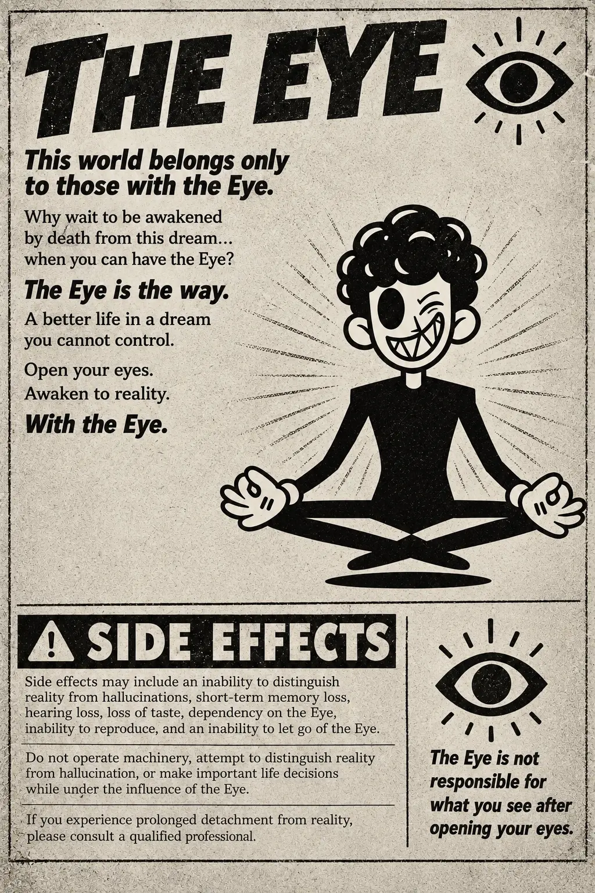
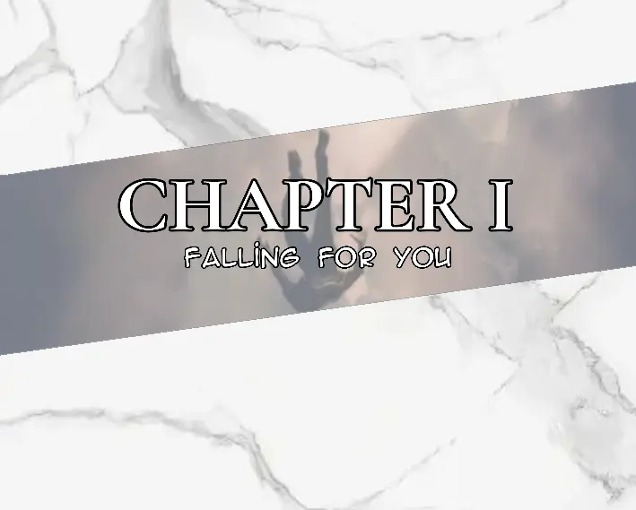
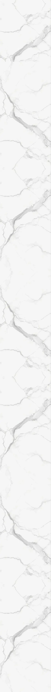

THE EYE
This world belongs only to those with the Eye.
Why wait to be awakened by death from this dream...
when you can have the Eye?
The Eye is the way.
A better life in a dream you cannot control.
Open your eyes.
Awaken to reality.
With the Eye.
SIDE EFFECTS
Side effects may include an inability to distinguish reality from hallucinations, short-term memory loss, hearing loss, loss of taste, dependency on the Eye, inability to reproduce, and an inability to let go of the Eye.
Do not operate machinery, attempt to distinguish reality from hallucination, or make important life decisions while under the influence of the Eye.
If you experience prolonged detachment from reality, please consult a qualified professional.
The Eye is not responsible for what you see after opening your eyes.


Johan laughed as he smoked, sinking deeper into the couch.
"I really need to get the Eye too. I could awaken from this strange dream and—who knows?—I might be sitting with a curvy girlfriend right now."
"Give me that," Margaret said.
She took the cigarette from his fingers and inhaled deeply before exhaling a perfect ring of smoke. She watched it drift toward the ceiling, then looked over at Johan, who was holding the remote and aimlessly searching through the channels.
"I could be sitting with a very handsome guy. Muscles and everything."
"Yeah, but no one will ever want us," Johan said.
Margaret glanced around the house.
It was clean. Almost unnaturally clean.
But the place where they sat was another story.
The couch was stained and worn, surrounded by empty beer cans, cigarette packets, scattered pills, and other things neither of them seemed to remember leaving there. It looked as though they had been sitting in that same spot for years without ever truly getting up.
"Wow. Journey Into the Forest is playing."
Johan suddenly sat up.
"Ohhh, shit. Let me take some pills."
He reached toward the table and grabbed four red pills from a small pile. He tossed them into his mouth without water, then picked up an open can of beer from the floor and swallowed several mouthfuls.
"You're watching cartoons now? Seriously?" Margaret asked.
"They're not just cartoons."
Johan held out another handful of red pills toward her.
"Take these. Then you'll see."
Margaret stared at the pills.
"Six?"
"Six."
She hesitated for only a moment before taking them.
"When you watch this show with these red devils in you," Johan said, settling back into the couch, "you feel like you're actually in the forest."
He smiled.
"You can feel the wind blowing against your face. It's like you've finally awakened. Like you've finally come home."
His voice became quieter.
"At peace."
He stared at the television.
"You just feel like you can become whatever you want to become."
Johan dropped back into the couch.
But Margaret wasn't listening anymore.
Her eyes were fixed on the screen.
The colors seemed brighter now.
The forest seemed deeper.
The trees seemed to stretch beyond the television itself.
And before long, neither of them was sitting in their dirty living room anymore.
Together, they journeyed into the forest.
----
The front door opened.
Maze Mantha walked into the sitting room.
She passed Johan and her mother, who were sitting together on the couch, completely absorbed in the cartoon playing on the television. They were laughing and giggling like children, occasionally making strange sounds to each other.
Maze slowed for a moment.
They were speaking a language she had never heard before.
She stared at them, confused, but neither of them seemed to notice her.
She ignored them and continued into the kitchen.
Opening the refrigerator, Maze took out a plate of leftover food. She lifted the lid and immediately smelled it.
Rotten.
She frowned, holding her breath as she carried it to the bin and threw everything away. Afterward, she turned on the tap and began washing the plate.
As she walked back through the sitting room, her mother and Johan were still laughing at the television, making those strange noises between themselves.
Maze didn't say anything.
She continued down the hallway toward her bedroom.
When she reached her door, she stopped.
It was already open.
Maze stared at it.
She was certain she had closed it before leaving.
She slowly pushed it wider and looked inside.
Something was wrong.
Her television was gone.
She stood there for a moment, staring at the empty space where it had been.
Then her expression hardened.
They had taken it.
Maze stormed out of the bedroom and headed back toward the sitting room.
But as she approached, something caught her eye.
Beside her mother was a plastic bag.
It looked brand new.
Inside were cans of beer, packets of cigarettes, and handfuls of pills.
Maze didn't need to ask.
She already knew.
She looked at the bag.
Then at her mother.
Then at the empty space where her television used to be.
They had sold her TV.
Maze went back to her room and closed the door behind her.
She tossed herself onto the bed and lay there for a moment, staring at the ceiling. Then she reached for her phone.
She opened her music and pressed play.
"Make Me Numb" by One Little Blade.
The music filled the room as Maze began scrolling through her phone.
After a while, she opened the Jobless app.
She had been checking it almost every day for the past two years.
Job after job.
Application after application.
Nothing.
Not a single one had worked out.
She scrolled through the listings, barely reading them anymore.
Sometimes it felt as if life itself was against her.
As if she was nothing.
As if she was a disappointment.
The thoughts were beginning to spiral when her stomach suddenly growled.

Maze stopped.
She looked down at herself.
"Great."
She sighed and continued listening to the song, letting the music drown out the thoughts.
Then her phone rang.
Bruce.
Maze answered.
"Hey, Bruce."
"Yo, sup, Maze?"
"Oh, nothing. Just chilling. What about you?"
Maze looked across the room.
Her eyes landed on the empty television stand.
It looked strangely lonely without the TV.
"I'm just outside," Bruce said. "Thinking about you and waiting for you."
Maze raised an eyebrow.
"Oh? You're outside?"
"Yeah. Look out your window."
Maze slowly sat up.
She climbed off the bed and walked toward the window.

Outside, in the yard, Bruce was standing beneath a tree.
He looked up at her window and waved.
Maze smiled.
"Alright. I'll be there."
She ended the call.
Maze grabbed her shoes, slipped them on, and walked out of the room.
A moment later, she left the house.
It was late afternoon.
The sun hung low enough to cast long shadows across the quiet street. Only a few cars passed by, and there were hardly any people around.
Maze spotted Bruce beneath the tree.
"Hey. Didn't expect you to be here."
She looked left and right along the street before walking toward him.
"What's up?"
As she approached, Maze casually brushed her hair back, watching Bruce.
Bruce stepped closer.
Then he reached for her hands and gently held them.
Maze looked at him.
Bruce wasn't looking at her hands.
He was staring directly into her eyes.
"Ehh... what's with you today?" Maze asked, slightly confused.
Bruce held both of her hands.
"Your hands are soft."
He smiled.
"And warm."
Maze's cheeks turned pink.
"Thanks."
Bruce took a breath.
"I've been scared to tell you something."
Maze looked at him.
"But I'm confident now."
He tightened his grip on her hands slightly.
"Because I know you feel the same way."
Maze's smile faded.
"What... do you mean?"
Her eyes widened.
Bruce looked directly into hers.
"What I'm trying to say is... I've found peace with you."
He paused.
"I love you, Maze."
Maze froze.
"I want us to be together."
She immediately pulled her hands away.
"Oh... no. No, no, no."
Maze wrapped her arms around herself and began pacing from one side to the other.
Bruce watched her, confused.
"Is something wrong?"
He stepped forward and gently caught her by the shoulders, stopping her.
Maze looked away.
"It's just... I thought we were..."
She swallowed.
"Just friends."
She looked back at him.
"Only friends. Not... this."
Bruce's expression changed.
"But what about all the signs you gave me?"
Maze frowned.
"What signs?"
"All the couple-like chemistry we have. The dates. Everything."
Maze stared at him.
"We were on a date?"
Bruce looked at her.
"Yes."
"Weren't we just chilling?"
"No."
He shook his head.
"That was a date, Maze."
His voice had become sharper.
Maze lowered her eyes.
"I'm sorry, Bruce."
Bruce stood there for a moment.
Then he looked away.
"Whatever."
He turned around and walked away.
Maze remained where she was.
She watched him disappear down the street.
Her arms slowly fell to her sides.
She looked down at the ground, unsure of what to do next.
*So stupid.
I'm so dumb.
I'm an idiot.
I'm evil.
I shouldn't have hurt him.
He was the only kind friend I had... and I hurt his feelings.
Now he's leaving.
I'm a disappointment.
I ruined everything again.
I should just disappear.
I'm so useless.
I...
I hate myself.
*
Her thoughts ran wild, one after another, until she could barely tell them apart.
By the time she returned to her room, she was already crying.
She lay on the bed, staring at nothing.
The music from her phone was still playing, but she wasn't listening anymore.
After a while, she rolled over and opened the drawer beside her bed.
She stared inside.
For several seconds, she didn't move.
Then she reached in.
Her fingers touched the small box.
She hesitated.
Then she picked it up.
It was heavier than she remembered.
Maze held it in both hands for a moment, feeling its weight settle into her palms.
Her hands were trembling.
She looked at the box.
Then away.
She swallowed.
Slowly, she stood.
The walk to the bathroom felt longer than it should have.
Her feet dragged against the floor.
Tears continued running down her cheeks. She didn't wipe them away.
When she reached the bathroom, she stopped in front of the mirror.
She looked at herself.
Her eyes were red.
Her cheeks were wet.
She looked exhausted.
Then, for some reason, Maze smiled.
It was a strange smile.
Forced.
Empty.
The smile disappeared.
She looked down at the sink.
For a split second, something caught her attention.
Maze slowly raised her eyes toward the mirror again.
Her reflection was still smiling.
Maze froze.
She stared at herself.
The reflection stared back.
Neither of them moved.
Maze blinked.
Her reflection was normal again.
She swallowed.
"I'm losing it."
Her eyes dropped to what she was holding.
Her fingers tightened around the box.
Another tear slipped down her cheek.
The bathroom was completely silent.
No music.
No voices.
Nothing.
Maze slowly opened the box.
Her breathing became shallow.
She stared at what was inside.
For a moment, she simply stood there.
Then she raised her hand toward her wrist.
Maze stopped.
Her hand trembled.
She looked at herself in the mirror one last time.
Then—
CRASH!
Something fell through the ceiling.
A body dropped from above and slammed directly onto her bed.
The bed collapsed underneath him.
"Fuuuck!"
The stranger groaned as he lay among the broken pieces of the bed, looking around in confusion.
He slowly pushed himself upright.
"How is it that every time I'm still doing another job, someone pulls me toward another case?"
He looked around the room.
Then toward the bathroom.
The door was open.
He frowned.
"It's a girl."
He paused.
"Obviously, it's a girl."
He climbed out of the wreckage and walked toward the bathroom.
Then he saw her.
Maze stood completely motionless.
A blade was held against her wrist.
She wasn't moving.
Neither was anything else.
The room had gone silent.
Time itself seemed to have stopped.
Then—
it continued.
Maze heard the sound of her bed collapsing.
CRASH!
She turned around.
The stranger was gone.
Maze stepped out of the bathroom.
Her bed was destroyed.
Pieces of wood lay scattered across the floor. Torn fabric hung from the broken frame, and the mattress had been thrown sideways.
She stared at it.
Her breathing was slow.
She looked up.
The ceiling was perfectly intact.
No hole.
No cracks.
Nothing.
Maze kept staring.
She looked from the ceiling to the bed.
Then back to the ceiling.
For a few seconds, she simply stood there.
She should have been confused.
She should have been afraid.
But she was too tired to care.
Whatever had just happened felt distant.
Almost unreal.
Maze slowly turned back toward the bathroom.
She walked to the mirror again.
Her hand lowered.
She closed her eyes.
For a moment, she simply stood there, exhausted.
The bathroom was silent.
Her breathing was the only sound she could hear.
The blade remained pressed against her wrist.

Then—
"Oh no. Nope. Nein. I'm not letting you do that, Maze."
Eliezer stood behind her.
Time stopped again.
Everything became completely still.
He reached forward and gently placed his hand on Maze's head.
Her body immediately went limp.
She fell forward into his arms.
Eliezer caught her and carried her over to the broken bed.
He stopped beside it.
For a moment, nothing happened.
Then the broken pieces of the bed began moving on their own.
The wood slid back into place.
The frame reconstructed itself.
The mattress returned to its original position.
Within seconds, the bed was completely restored.
Eliezer carefully laid Maze down and pulled the blanket over her.
He brushed a few strands of hair away from her face, making sure she was comfortable.
Then he looked down at the blade still in her hand.
He took it from her fingers.
Eliezer examined it for a moment.
He ran his finger carefully along its edge.
The sharpness began disappearing.
The blade became duller and duller until it couldn't even cut through a sheet of paper.
"Much better."
He placed it back inside the drawer and closed it.
Eliezer looked at Maze.
She was sleeping peacefully now.
"Girl."
He sighed.
"A girl."
He shook his head.
"A boy would've been better."
Eliezer walked around to the other side of the bed and sat beside her.
He studied Maze for a moment before slowly placing his hand against the side of her head.
His eyes narrowed.
He was reading her memories.
Images and fragments of Maze's life passed through his mind.
Her home.
Her mother.
Johan.
The jobs.
The loneliness.
Bruce.
Everything she'd been carrying.
Maze shifted slightly in her sleep.
"Hmmm..."
Eliezer frowned.
"Severe."
He continued looking through her memories.
"These memories are not so good."
He slowly removed his hand from her head.
"I see now."
He looked at Maze.
"So you think I can handle these types of issues?"
A small smile appeared on his face.
"At least a badge or an award would help."
He shrugged.
"Just saying."
Eliezer lay down beside her.
The room became quiet again.
Maze continued sleeping peacefully.
And beside her, Eliezer closed his eyes.


.png)